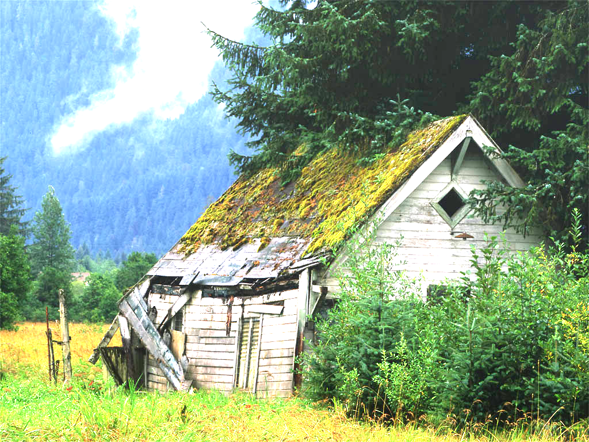
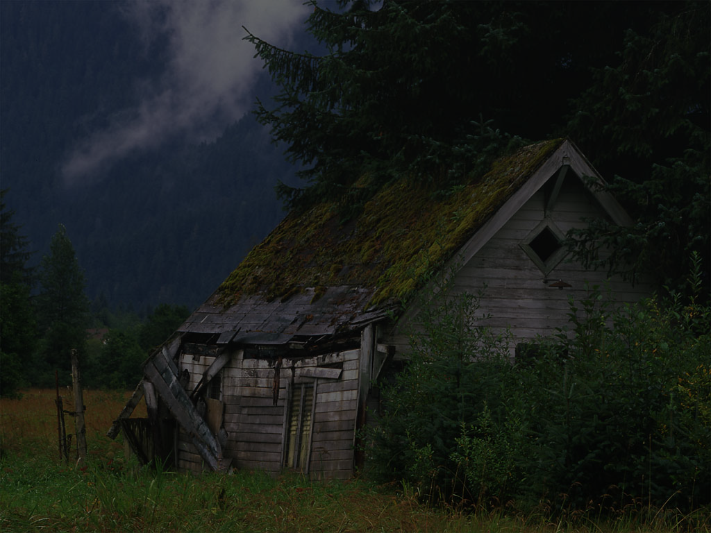
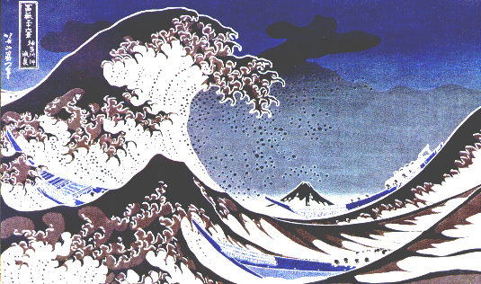
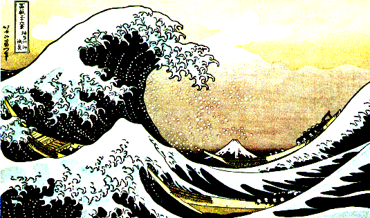
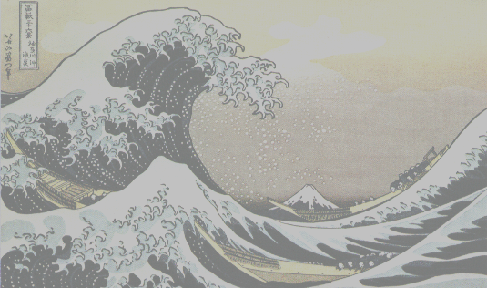
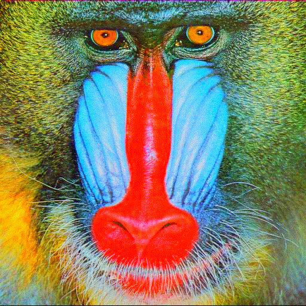
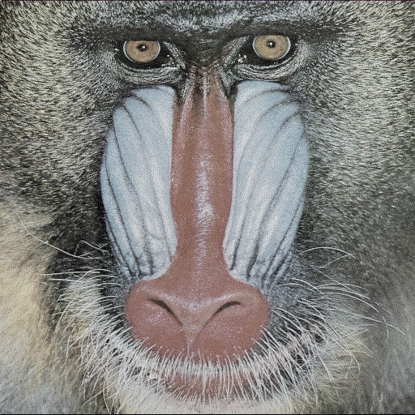
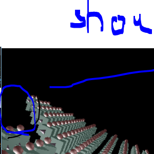
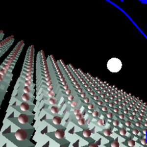

This may be run through image -brightness <val>. This was implemented by scaling each color of each pixel by the given amount, clamping the values to remain within the range [0, 255]. Example given below:
This may be run through image -contrast <val>. This was implemented by first calculating the average luminance of the image, followed by linearly interpolating between each pixel color and that average luminance. Example given below:
This may be run through image -saturation <val>. This was implemented by linearly interpolating each pixel with a greyscale version of itself, clamping values to legal ranges. Examples given below:
This may be run through image -gamma <val>. This was implemented by converting the discrete color values into the continuous range [0, 1), and then raising them to the inverse of the value provided. Examples provided below:


This may be run through image -crop <x> <y> <width> <height>. This is done by creating a new image and dropping the unused pixels. This allows a photo from an old CSE 167 assignment revealing a bug to have the bug conveniently removed, as such:
Work in progress...